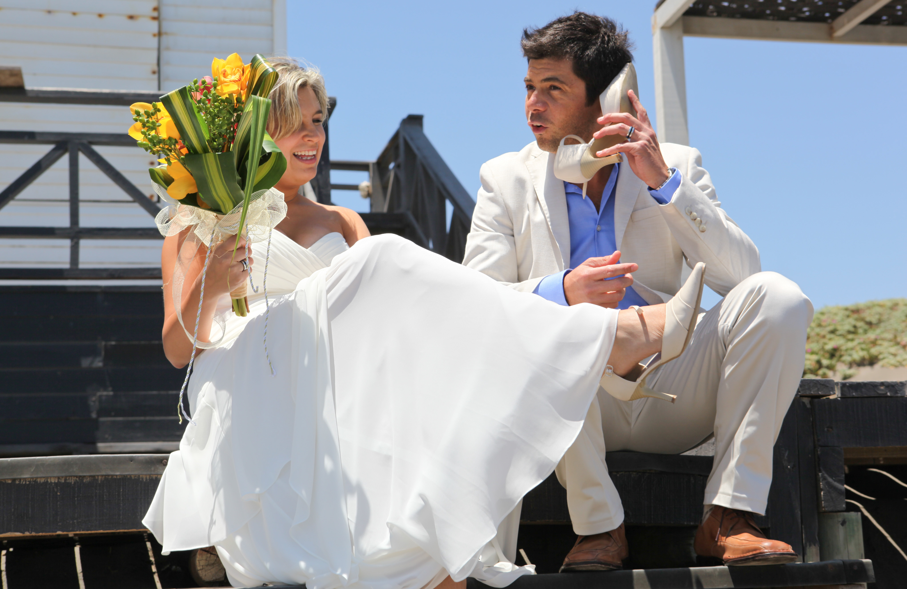
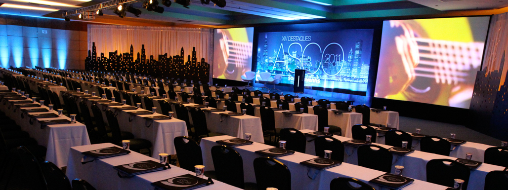

Solistas, ensambles y producciones a medida
Solistas, cantantes e instrumentistas, grupos y ensambles para ceremonias, cócteles, cenas, celebración de bodas, presentaciones temáticas, producciones teatrales, matrimonios y funerales.
Musicale
Música presencial para eventos de empresas, instituciones públicas y privadas, conciertos y producciones musicales. Creamos y desarrollamos para usted una experiencia musical exclusiva, combinando el arte con nuevas tendencias tecnológicas, lo que nos permite ofrecer desde la participación de un solista hasta una gran orquesta sinfónica, con arreglos propios y formatos flexibles que entregan una amplia, rica y sofisticada sonoridad.
Lo que hacemos
Musicale desarrolla presentaciones para eventos que requieren ambiente, identidad y una ejecución impecable. Cada formato está pensado para destacar la experiencia de sus invitados.
Creamos soluciones musicales con presencia escénica, repertorio cuidado y una lectura precisa del contexto para que la música no sea un accesorio, sino una parte real del valor percibido del evento.
Solistas, cantantes e instrumentistas, grupos y ensambles para ceremonias, cócteles, cenas, celebración de bodas, presentaciones temáticas, producciones teatrales, matrimonios y funerales.
Grandes instituciones públicas y privadas a nivel nacional y centros de eventos.
Propuesta comercial
Quiénes somos
Fernando Antireno · Músico, director de orquesta y compositor
Musicale cuenta con un staff de profesionales bajo la dirección artística de Fernando Antireno, músico, director de orquesta y compositor, con la misión de convertir su evento en una experiencia que trascienda a una simple música de fondo.
Trabajamos con arreglos propios y una visión que combina refinamiento, versatilidad y criterio escénico. Sobre esa base construimos presentaciones con personalidad, matices y una rica sonoridad para entregar una grata experiencia musical.
Esto genera una solución elegante para clientes que buscan categoría, flexibilidad y eficiencia artística.
"
Una dirección artística real cambia la percepción completa del evento: no se trata solo de acompañar, sino de construir presencia, atmósfera y memoria.

Diferencial artístico
El diferencial de Musicale está en cómo se construye la experiencia: interpretación multiinstrumental, arreglos propios, una sonoridad amplia y sofisticada, y la capacidad de adaptarse al tipo de evento sin perder presencia artística.
La posibilidad de interpretar múltiples instrumentos amplía registros, matices y colores musicales dentro de una misma propuesta, entregando una experiencia más rica y versátil.
Musicale trabaja con arreglos desarrollados según el contexto del evento y el perfil del cliente, logrando una propuesta con identidad y criterio musical, no una selección estándar resuelta de forma genérica.
La combinación entre interpretación, producción y arreglos permite reemplazar gran parte de una formación tradicional y aun así mantener una sonoridad amplia, rica y sofisticada.
La propuesta se adapta al tipo de evento, al espacio disponible, al ambiente requerido y al nivel de protagonismo que la música debe tener dentro de la experiencia.
Es ideal para quienes buscan una experiencia musical de categoría, pero no quieren rigidez de formato ni una operación compleja para lograr alto impacto artístico.
Puede presentarse en formato solista, con cantantes o con músicos invitados, manteniendo coherencia estética y un sello artístico reconocible en cada versión.
Servicios principales
Musicale organiza su propuesta en líneas comerciales claras para que cada cliente entienda rápidamente cómo se traduce esta experiencia musical en su tipo de evento.
01
La música de un matrimonio no solo acompaña, sino que define la emoción del día.
Musicale ameniza ceremonias, cócteles, cenas y momentos especiales con una propuesta elegante, sensible y musicalmente resuelta.
El repertorio se adapta a cada etapa del evento para lograr una experiencia con estilo, continuidad y una atmósfera acorde al nivel de la celebración. El formato puede ser solo instrumental o con cantante y coros, según el carácter que se quiera imprimir al matrimonio.
02
La música en vivo mejora la percepción del evento y refuerza una imagen premium.
Musicale crea ambientes sofisticados para cócteles, cenas, lanzamientos, aniversarios, celebraciones de equipo y encuentros con clientes.
La ventaja está en ofrecer una propuesta elegante y de fácil implementación, con formatos que se adaptan con naturalidad a espacios corporativos.
03
Hoteles y viñas requieren experiencias que eleven la percepción del espacio.
Musicale funciona como una propuesta artística diferenciadora para cenas especiales, fechas conmemorativas, programación cultural, eventos privados y experiencias premium para huéspedes.
El formato aporta valor agregado, atmósfera refinada y adaptabilidad para integrarse al entorno sin perder sofisticación.
04
Musicale también desarrolla programas artísticos con identidad propia para conciertos temáticos, ciclos culturales, funciones especiales y eventos que requieren una propuesta escénica más definida.
Podemos construir programas alrededor de clásicos del cine, repertorio italiano, boleros de gala, música de Navidad, conciertos de música clásica y otros formatos especiales según el contexto del evento.
Repertorio y estilos
El repertorio se define según el tipo de evento y el ambiente que se quiere construir. Estas son algunas líneas que ayudan a imaginar la experiencia.
Ideal para ceremonias, recepciones formales, hoteles, viñas y conciertos de atmósfera refinada.
Un formato emocional y reconocible para eventos especiales, galas o programas temáticos de alto impacto.
Perfecta para cenas elegantes, celebraciones con identidad mediterránea y experiencias con sabor internacional.
Una opción sofisticada, romántica y con presencia escénica para recepciones, cenas y momentos memorables.
Selecciones pensadas para entradas, firmas, rituales, salidas y pasajes que necesitan emoción y delicadeza.
Programas especiales para centros culturales, municipalidades, hoteles, marcas y eventos privados.
Repertorio elegante para acompañar sin invadir, dando categoría y continuidad a la experiencia del público.
Navidad, aniversarios o fechas especiales con un enfoque musical de alto nivel y lectura oportuna del contexto.
Galería y videos
Una selección visual pensada para mostrar presencia escénica, atmósfera y el tipo de experiencia que Musicale puede aportar en ceremonias, recepciones, cenas y presentaciones especiales.

Espacio pensado para mostrar la propuesta completa en 60 a 90 segundos, con foco artístico y comercial.
Presentación audiovisual disponible próximamenteIdeal para mostrar montaje, presencia escénica, ambiente y nivel de ejecución en eventos premium.
Solicitar presentación directaReservado para un programa especial: clásicos del cine, Italia, boleros de gala o Navidad.
Pedir propuesta de programaClientes y confianza
Marcas, instituciones y espacios que valoran una propuesta artística sobria, confiable y capaz de elevar la experiencia del público.
“La música logró exactamente lo que queríamos: elegancia, emoción y una presencia artística que se sintió en todo el evento.”
Matrimonio Experiencia cuidada de principio a fin, con emoción y distinción.“Necesitábamos una propuesta sobria, de alto nivel y fácil de implementar. Musicale resolvió muy bien la atmósfera de la noche.”
Evento corporativo Una solución elegante para marcas y organizaciones que cuidan su imagen.“El formato se adaptó perfecto al lugar y aportó un valor real a la experiencia. Se sintió distinto y muy bien ejecutado.”
Hotel o viña Formato adaptable, atmósfera refinada y buen diálogo con el entorno.Cierre comercial
Si está buscando una propuesta elegante, flexible y con un sello artístico real, conversemos. Podemos definir el formato, el repertorio y la presencia musical ideal para su evento, creando una atmósfera realmente memorable.
Contacto
Complete el formulario y abriremos su consulta lista para enviar por WhatsApp. También puede escribir directamente, llamar o usar el correo visible.
Perfil oficial disponible próximamente